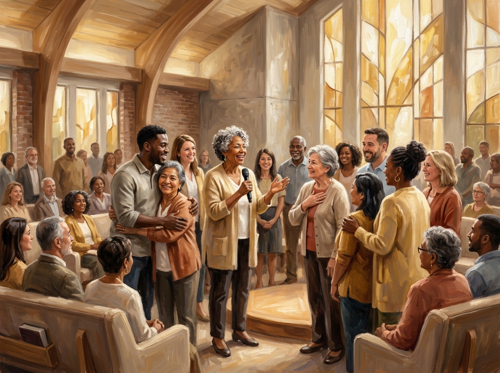

Alabanzas y Adoración
Música cristiana adventista que llena tu alma de gozo y transforma tu mente en adoración a Dios.
Conectando tu corazón con el cielo.
Accede a nuestros servicios espirituales diseñados para edificar tu fe y acercarte a Dios.
Conexión Celestial TV es el ministerio digital Adventista del Séptimo Día, comprometido a llevar mensaje de esperanza, salvación y amor a través de la radio y la pantalla. Cada programa está diseñado para edificar tu fe y fortalecer tu relación con Dios.
Mensajes fundamentados en las Sagradas Escrituras con aplicación práctica para tu vida diaria.
Música que glorifica a Dios y edifica el alma, seleccionada con amor para tu devoción.
Un equipo comprometido que ora por cada petición recibida de nuestra comunidad.
Programas de estudio bíblico profundo, siguiendo las doctrinas adventistas del séptimo día.
Cada programa es una oportunidad de encuentro con Dios y de crecimiento espiritual.

Comparte tu necesidad con nosotros. Todos los campos marcados con son obligatorios.